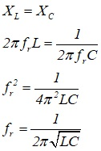
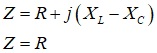
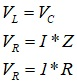
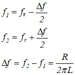

| |
AIM:
To obtain resonant frequency of a given RLC series circuit.
SOFTWARE REQUIRED:
OrCAD-PSpice/MATLAB-SIMULINK
THEORY:
The phenomenon of the resonance in series and parallel RLC circuit is by connecting either variable frequency AC supply or same value of inductive and capacitive reactance. The figure shows the circuit with a resistance R, inductance L, and capacitor, C in series connected to a single phase variable frequency AC supply. By varing the frequency from minimum to maximum, at one frequency, inductive reactance XL should be equal to capacitive reactance XC. So net reacatnce in the circuit is zero and that frequency is the resonance frequency fr. At Resonance Condition,Resonance frequency fr is,


Impedance Z is simply minimum and equivalent to resistance R. Hence the current is maximum. The phase angle is φ=0° and the power factor is unity (cosφ=1), which means that the current is in phase with the input(supply) voltage. So, the magnitude of the current is (V/R) in the circuit is only limited by resistance, R. Voltage across each element is,

If the magnitude of the current is reduced to (1/sqrt(2)) of its maximum value, the power consumed in R will be half of that with the maximum current, as power is I2R. So, these points are termed as half power points. If the two frequencies are taken as f1 and f2, where,

|